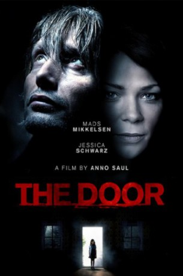
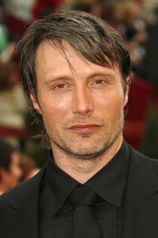
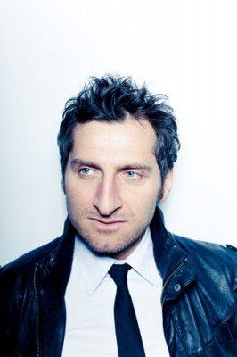
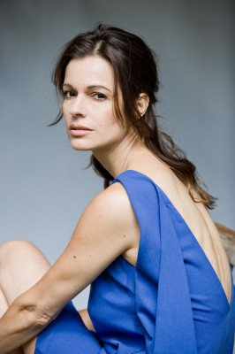

#9380 Die Tür
Alternativ: Door, The
 
 IMDB-Wertung: 6.7 / 10
IMDB-Wertung: 6.7 / 10  Metascore: 0
Metascore: 0 
David Andernach (Mads Mikkelsen) lives non-chalantly at the height of his success as a painter, as a tragic misfortune befalls him from one second to the other. While he is paying his beautiful neighbor a visit, his daughter Leonie drowns in the pool of his house. Tormented by guilt, David turns into a wreck. His life is no longer under control, especially since his wife Maja (Jessica Schwarz) can never forgive him. Completely at the end he wants to kill himself jumping in the same pool, but at the last moment is saved by a friend. But as the guilt-ridden man has fallen in the greatest despair, a butterfly flapping on his nose leads him to a door, actually more an underground tunnel. On the other side he finds life as it was before. He gets back to the all-important moment and so given the opportunity to save his daughter. But even with his own ego, which is just on the road to regret his infidelity. Conscious as never before of those who have always loved him, the auspicious ...
Jahr: 2009
Dauer: 103 Minuten
FSK: 16
Land: Deutschland Studio: Senator FilmTonspuren:
Untertitel:
Auflösung: 1080p (1920x816) Größe: 8714 MB
Genre: Thriller, Drama, Sci-Fi, Mystery
Regisseur: Anno Saul
Drehbuch: Jan Berger, Akif Pirinçci
Soundtrack: Fabian Römer
Darsteller:
-  Mads Mikkelsen als David Andernach
 Jessica Schwarz als Maja Andernach
Jessica Schwarz als Maja Andernach-  Tim Seyfi als Max Oelze
-  Suzan Anbeh als Susanne Wiegand
 Heike Makatsch als Gia
Heike Makatsch als Gia- Nele Trebs als Nele Wiegand
- Christof Düro als Fahrer Kleinbus
- Valeria Eisenbart als Leonie Andernach
- Thomas Thieme als Siggi Butschma
- Stefan Gebelhoff als Paul Wiegand
- Thomas Arnold als Edgar Keun
- Karsten Dahlem als Polizist 1
- René Lay als Polizist 2
- Lena Sabine Berg als Henriette Zahnert
- Patrick Heinrich als Segej
- Robert Bagelmann als Rothaariger Junge
- Kevin Werner als Rothaariger Junge - alt
- Ingo Hülsmann als David Andernach
- Corinna Borchert als Nachbarin (uncredited)
- Rüdiger Kühmstedt als Nachbar (uncredited)
Datei: X:\2009(N-Z)\Tür, Die (2009, FSK16, 1920x816).mkv seit 30.08.2018
Festplatte: HD 2009(G-Z)-2010(A-F)
 Es gibt insgesamt 99 Filme in der Gruppe '2009(N-Z)'
Es gibt insgesamt 99 Filme in der Gruppe '2009(N-Z)'